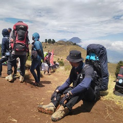
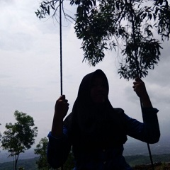
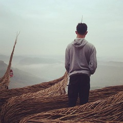
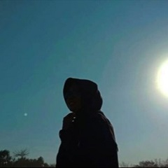

Dzildhan Hanan Azfa
Nama panggilannya adalah Dzildhan.
Masih unyue 16 tahun. Belajar di SMK N 2 Wonosari jurusan Teknik Komputer Jaringan. Memiliki hobi bermain musik dan audio editing.
Quotes: Stop working, start sleeping

Khoirunisa Fitria Aldira
Nama panggilannya adalah Dira.
Otw 18 tahun. Belajar di SMK N 2 Wonosari jurusan Teknik Komputer Jaringan. Memiliki hobi menyanyi, mendengarkan musik, dan menonton film.
Quotes: Life for eat, eat for homework

Nicolas Tegar Nurhadi Putra
Nama panggilannya adalah Nico.
Sudah legal 18 tahun. Belajar di SMK N 2 Wonosari jurusan Teknik Komputer Jaringan. Memiliki hobi meratapi hidup
Quotes: Selama masih bernafas, maka aku masih menghirup O2 dan mengeluarkan Co2
Rendy Pratama Gilang Saputra
Nama panggilannya adalah Rendy.
Umur 17 tahun. Belajar di SMK N 2 Wonosari jurusan Teknik Komputer Jaringan. Memiliki hobi mendaki gunung bersama teman-teman tercinta.
Quotes: Tak kenal maka tak kintang kintang oi

Tarisa Putri Gimastyar
Nama panggilannya adalah Tarisa.
17 tahun belum lama. Belajar di SMK N 2 Wonosari jurusan Teknik Komputer Jaringan. Memiliki hobi menonton anime:v
Quotes: Jangan terlalu rasional karena terkadang hal itu tidak dibutuhkan